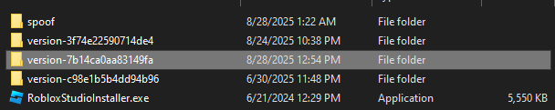

Step-by-Step Instructions
Need a version hash? Jump into the Velocity Discord Server
- Visit rdd.weao.gg / rdd.latte.to
-
Copy any version hash (looks like
"version-xxxxxxxxxxxxxxxx") from #updates (in velocities discord server has these hashes) (MUST BE WINDOWS). -
Paste that into the version hash and download.
Recommended hashs:7b14ca0aa83149fa (NEW)89b6c70d8f7f42ac -
Once downloaded (
LIVE-WindowsPlayer-version-xxxx.zip):-
Find your Roblox install folder:
C:\Users\xxxx\AppData\Local\Roblox\Versions\version-(CurrentVersion) - Remove all content in it.
- Put your spoofed version of the client in.
-
Find your Roblox install folder:
- You are now free to run and inject.
Tip: Duplicate your folder before the first run of the spoofed version in case Roblox updates.
IF ROBLOX UPDATES THEN YOU MUST REDO ALL OF THESE STEPS + CLEAR ANY OTHER VERSIONS IN YOUR VERSIONS FOLDER TO AVOID CONFLICT.
(Save the spoofed version in the folder as backup if you want, as "spoof").
Need help? DM @yesmyaccountisrare
(Discord ID: 344566614492184587).
Video Guide
If the video doesn’t load, try refreshing the page or open it directly on YouTube.
Screenshot Example
Your folder names may differ slightly based on the current Roblox version.
Need Help or Updates?
These communities share hashes, updates, and troubleshooting steps.